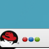
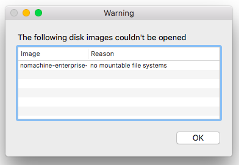
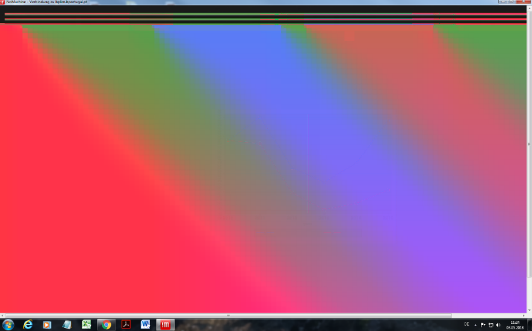
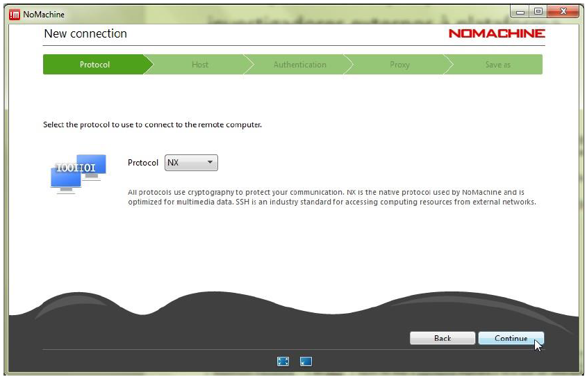
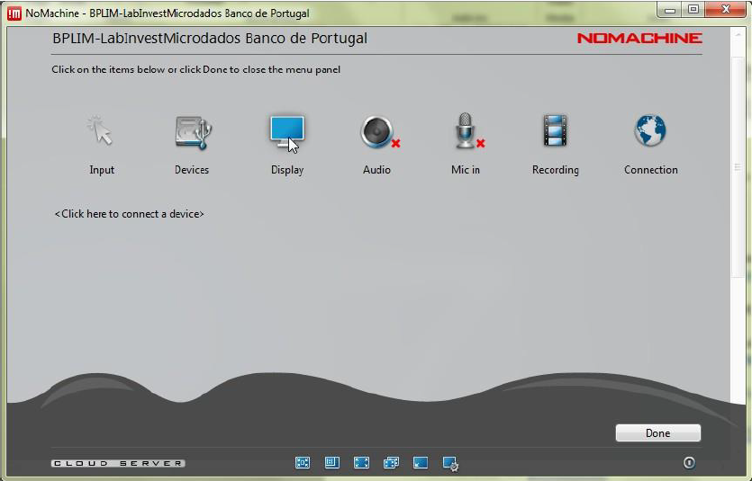

External Server Guide
Access to the External Server
Overview
This guide will help you connect to BPLIM’s external server, navigate your project environment, and use statistical software (Stata, R, Python, Julia) for your research. The server runs on Linux and uses containerized environments to ensure reproducibility and consistency across projects.
Key features:
- Secure remote access via NoMachine client
- Isolated project environments with defined folder structures
- Statistical software running in containers
- Support for interactive and batch processing modes
Upon Access Approval
Once access is approved, you can connect to the external server using the NoMachine client. See Download, install and configure NoMachine client for detailed instructions.
Password Policy
Passwords are a critical security component. Your initial password must be changed at first login, and all passwords must comply with the requirements below.
Password requirements:
- Minimum length: 8 characters
- Character classes: At least 4 different types (uppercase, lowercase, numbers, punctuation)
- History: Cannot reuse any of your last 7 passwords
- Expiration: Passwords expire after 60 days and must be changed at next login
- Failed attempts: After 6 consecutive failed login attempts, your account will be locked for 10 minutes
For complete password policy details, see Appendix: Password Requirements
First Steps
This section guides you through your initial login and introduces the basic interface and folder structure.
Logging In
- When you start NoMachine, you will see the following connection screens:


Accessing Your Project
- Once logged in, select the Kickoff Application Launcher menu:

Navigate to your project:
Click on Applications.
Select BPLIM and click on your project (e.g.,
P999_research_project).This opens the Dolphin file manager1, showing your project folder:

You can display the Terminal (command line) alongside Dolphin by pressing F4.
Understanding Your Project Structure
Launcher scripts: Files with the
.shextension are scripts that launch applications or enter containerized environments. For example,stata_container.shstarts Stata.2You can run launcher scripts in two ways:
- GUI method: Click the
.shfile in Dolphin - Terminal method: Type
./stata_container.shin the Terminal
- GUI method: Click the
Project folders: Your project folder contains the following directories:
| Directory | Purpose | Access |
|---|---|---|
initial_dataset |
Data sources provided by BPLIM | Read-only |
— external |
Data provided by the researcher | Read-only |
— intermediate |
Intermediate files | Read-only |
— modified |
Modified data provided by BPLIM | Read-only |
results |
Output files generated by researchers | Read-write |
tools |
Project-specific analysis tools | Read-only |
work_area |
Temporary working directory | Read-write |
Note: Your work_area folder also contains templates for Stata, R and/or Python, depending on your project requirements. By default, these template files are read-only.
Logging Out
- To properly disconnect, log out as shown below, then close the NoMachine window:3
Confirm by clicking Logout:4
Important notes about session management:
Persistent sessions: If you do not log out, your session remains open until your next login. While this keeps programs running, it consumes server resources.
Best practice for long-running tasks: Use batch mode (see Running Programs in Batch Mode) instead of leaving sessions open.
Server maintenance: During server reboots, open sessions are terminated and unsaved work is lost. Save your work regularly.
Important Guidelines
Managing Disk Space
Proper disk space management is essential for maintaining access to the server.
Critical Rule: Do Not Save Files in Your Home Folder
Never save files in your home folder (/home/USER_LOGIN). If you exceed its size limit, you will not be able to log in. Always save files in your project’s work_area folder.
Monitoring and Cleaning Your Project Folder
Check your project size regularly to avoid exceeding storage limits. Follow these steps in the Terminal:
Navigate to your project folder:
cd /bplimext/projects/P999_research_project/List the total project size:
du -hCheck folder sizes and list those larger than or equal to 1 GB:
du --max-depth=1 -h | sort -h | grep GMove to the
work_areafolder:cd work_areaRepeat the size check in this folder:
du --max-depth=1 -h | sort -h | grep GIdentify duplicate or temporary files and remove them:
rm FILE_TO_DELETECompress large files or folders you are not currently using:
Compress a folder:
tar -zcvf YOUR_FOLDER.tar.gz YOUR_FOLDERCompress an individual file:
gzip YOUR_FILE
Using the Terminal
The Terminal is a command-line interface for interacting with the Linux system. It is essential for running programs in batch mode, managing files, and monitoring processes.
Accessing the Terminal
You can access the Terminal in two ways:
- From the menu: Red Hat → Applications → System → Terminal

- From Dolphin: Press F4 to open an integrated Terminal at the current location
Essential Terminal Tips
Quick reference:
Case sensitivity: Linux commands are case-sensitive (
lsis not the same asLS)Command history: Use arrow keys (up/down) to scroll through previous commands
Auto-completion: Press Tab to auto-complete file names and commands
Keyboard layouts: Non-English keyboards may have different symbol mappings. For example, on a Portuguese keyboard,
+is on the?keyCommon commands: See Appendix: Shell Commands for a comprehensive list
Example command:
ls -lArthLists files in human-readable format (h), long format (l), reverse order (r), sorted by modification time (t), including hidden files (A)
Working with Containers
All statistical software on the server runs inside containers – isolated, self-contained environments that ensure reproducibility and consistency.5 Understanding how to work with containers is essential before using any statistical software.
What Are Containers?
A container is a self-contained environment that includes a program along with all its dependencies, libraries, and configurations. This ensures:
- Consistency: Programs behave identically across different sessions
- Reproducibility: Your analysis can be replicated exactly
- Isolation: Project-specific packages don’t conflict with other projects
Starting Containers
There are three ways to start a container:
Method 1: Using Launcher Scripts (Recommended)
Each project includes launcher scripts (.sh files) for different software:
stata_container.sh- Launches Statar_container.sh- Launches R/RStudiopython_container.sh- Launches Python/Jupyterjulia_container.sh- Launches Julia
To use: Click the script in Dolphin or run ./script_name.sh in the Terminal.
Method 2: From the Terminal
cd /bplimext/projects/P999_research_project
singularity shell tools/_container/CONTAINER_ID.sifAfter entering the container, the Terminal prompt changes to show Singularity>. You can then launch applications manually.
Method 3: Direct Execution
Run commands directly inside the container without entering an interactive shell:
singularity exec tools/_container/CONTAINER_ID.sif <command>When to use each method:
- Method 1: Best for interactive work with graphical interfaces
- Method 2: Good for running multiple commands or programs within the same container session
- Method 3: Ideal for batch processing and automated scripts
Statistical Software
This section covers how to use Stata, R, Python, and Julia on the server. All software runs inside containers (see Working with Containers above).
Stata
Starting Stata
Use the stata_container.sh launcher script in your project folder:
- GUI method: Click
stata_container.shin Dolphin - Terminal method: Run
./stata_container.shfrom your project folder
Manual container access:
If you need to manually access the Stata container:
cd /bplimext/projects/P999_research_project
singularity shell tools/_container/CONTAINER_ID.sifThen launch Stata:
- Graphical version:
xstata-mp - Command-line version:
stata-mp
Ado-files
Ado-files are text files containing Stata programs. It is advisable to create and save your ado-files so results can be replicated later when running them on BPLIM datasets.
Stata looks for ado-files in several locations, typically organized as:
SITE – system-wide ado-files
PLUS – user-installed ado-files
PERSONAL – user-created ado-files
OLDPLACE – legacy location for ado-files
Stata always searches the current directory (.) and a set of predefined folders for ado-files. For BPLIM projects, ado-files provided by BPLIM are either built into the container or stored under /bplimext/projects/P999_research_project/tools. Ado-files that you create yourself should be saved in your project’s work_area (for example, in a dedicated ado/ subfolder).” Keep the adopath + "/bplimext/projects/P999_research_project/tools" code snippet immediately after this, as you already have.
To make sure Stata recognizes this directory, add the following line at the beginning of your .do file:
adopath + "/bplimext/projects/P999_research_project/tools"The sysdir command within Stata will list all directories currently in use:

In addition, the adopath command lists all directories where Stata searches for ado-files, including any paths you add yourself (such as the project tools directory). Whereas sysdir shows the base system directories (SITE, PLUS, PERSONAL, OLDPLACE), adopath displays the full search path.
Temporary Files
To manage Stata’s temporary files:
Check the current temporary folder:
tempfile junk display "`junk'"It should display something like
/tmp/St98278.000001If the temporary file is not in the path
/tmp, exit Stata and edit your.bashrcin your home directory (cd ~):
Using Dolphin (GUI): In Dolphin, enable
Show Hidden Files(or pressCtrl + H), then locate.bashrcand open it with KWrite.
Using the Terminal: Run
kwrite ~/.bashrcorvi ~/.bashrc. If you usevi, pressESC, type:wqand press Enter to save and exit (see Using theviFile Editor for more details).”
export STATATMP="/tmp"Apply the changes:
source .bashrcStart a new Stata session (inside the container).
Running Stata in Batch Mode
Batch mode is the recommended method for long-running or computationally intensive programs.
For the full workflow, see Running Programs in Batch Mode. In most cases your batch command will look like:
stata-mp do /bplimext/projects/P999_research_project/work_area/prog1.doRunning Stata with Screen
To run Stata interactively (not in batch mode) while preserving your session in the Terminal if the connection drops, use screen. For long-running interactive work in the Terminal, using screen is strongly recommended. See Using Screen for Persistent Sessions for detailed instructions.
R
Starting R/RStudio
Use the r_container.sh launcher script in your project folder:
- GUI method: Click
r_container.shin Dolphin - Terminal method: Run
./r_container.shfrom your project folder
This launches RStudio inside the container environment.
Manual container access:
If you need to manually access the R container:
cd /bplimext/projects/P999_research_project
singularity shell tools/_container/CONTAINER_ID.sif
rstudioIMPORTANT: When exiting R, do not save your workspace image to your home folder. If you need to preserve your workspace, save it in your project’s work_area folder.
Running R in Batch Mode
Batch mode is recommended for long-running R scripts. For the full workflow, see Running Programs in Batch Mode. In most cases your batch command will look like:
Rscript /bplimext/projects/P999_research_project/work_area/analysis.R > analysis.log 2>&1Running R with Screen
To run R interactively (not in batch mode) while preserving your session in the Terminal if the connection drops, use screen. For long-running interactive work in the Terminal, using screen is strongly recommended. See Using Screen for Persistent Sessions for detailed instructions.
Python
Starting Python/Jupyter
Use the python_container.sh launcher script in your project folder:
- GUI method: Click
python_container.shin Dolphin - Terminal method: Run
./python_container.shfrom your project folder
Manual container access:
cd /bplimext/projects/P999_research_project
singularity shell tools/_container/CONTAINER_ID.sifOnce inside the container, launch Jupyter Notebook:
jupyter notebookThis opens Jupyter in Firefox. Click New and select the Python kernel to create a notebook.
You can also use VSCode:
vscodeJulia
Starting Julia
Use the julia_container.sh launcher script in your project folder:
- GUI method: Click
julia_container.shin Dolphin - Terminal method: Run
./julia_container.shfrom your project folder
Manual container access:
cd /bplimext/projects/P999_research_project
singularity shell tools/_container/CONTAINER_ID.sifOnce inside the container, you can launch:
- Julia REPL:
julia - Jupyter Notebook:
jupyter notebook(opens in Firefox; select the Julia kernel) - VSCode:
vscode(opens the BPLIM-configured VSCode environment)
Structuring and Writing Code
Goal: keep code readable, reproducible, and easy to hand over.
Organize your project
- Work in
work_area; foldersinitial_dataset,external,intermediate,toolsandmodifiedare read-only. - Use the macros/variables defined in configuration files (profile.do, config.R, config.py) -
path_source,path_source_p,path_rep, etc. - Keep scripts in a dedicated folder (e.g.,
work_area/scripts), and store outputs in aresultsfolder under the work_area (check the template). - Do not save anything in your home folder.
Naming and layout
- Use short, descriptive names with underscores (e.g.,
01_import.do,02_clean.R,03_analysis.py). - Use
YYYYMMDDfor dated files (e.g.,analysis_20250312.log). - Add a brief
READMEinwork_areaexplaining the script order and entry points.
Paths and reproducibility
- Use paths defined in the configuration files or prefer relative paths from the
work_areainstead of hard-coded absolute paths or home-relative paths. - Set seeds for random routines (Stata:
set seed, R:set.seed(), Python:random.seed()/numpy.random.seed()). - Use the provided launcher scripts (
stata_container.sh,r_container.sh,python_container.sh,julia_container.sh) to ensure you are inside the correct container.
Ado-files and packages
Save your own ado-files in
work_area/ado/(or similar) and add it to the search path, for example:run profile.do ... adopath + “${path_rep}/ado”Packages or commands not already available must be requested from the BPLIM Team.
Batch and logging
- For long runs, use batch mode (see Running Programs in Batch Mode); redirect output to a dated log in
results/logs(e.g.,stata-mp do ... > results/logs/run_20250312.log). - Keep batch scripts (e.g.,
batch_run1) alongside the code they execute, and reference them from the batch section.
Editors and tools
- Use the provided wrappers (
vscodefor VSCode) or the software-specific editors inside each container. - If editing via GUI, remember to show hidden files when needed (e.g.,
.bashrc); if usingvi, see Using theviFile Editor. - Track code with GitLab (see Version Control with GitLab) and commit regularly with clear messages.
Data handling
- Never copy data to your home folder.
- Keep only essential intermediate files; clean temporary artifacts in
work_areato manage space. - Place final, non-sensitive outputs in
resultsin line with the output extraction rules.
Updates to Commands and Packages
Requests for additional commands or packages, as well as updates to existing ones, must be submitted to the BPLIM Team.
Build a Container to Fine-Tune Your Statistical Packages
The server uses Apptainer (formerly Singularity) containers. To request one, please send the BPLIM Team the definition file. We will build the image and place it in your project’s tools. Detailed information about Apptainer/Singularity containers is available at https://sylabs.io/.6 Additional notes are provided in the Appendix.
Running Programs in Batch Mode
Batch mode is the recommended method for running long-running or computationally intensive programs. Instead of keeping an interactive session open, batch mode allows you to submit jobs that run in the background.
Why Use Batch Mode?
- Efficiency: Frees up your interactive session
- Reliability: Programs continue running even if you disconnect
- Resource management: Better server performance for all users
- Recommended for: Any program that runs longer than 30 minutes
Basic Batch Workflow
Navigate to your working folder:
cd /bplimext/projects/P999_research_project/work_area/Prepare your analysis script and batch file:
- First, create or reuse a Stata do-file in your
work_area, for exampleprog1.do. - Then create a batch script file (plain text), for example
batch_prog1, containing the command to execute your do-file.
Example for Stata (
batch_prog1):stata-mp do /bplimext/projects/P999_research_project/work_area/prog1.doExample for R (
batch_r_analysis):Rscript /bplimext/projects/P999_research_project/work_area/analysis.R / analysis.log 2>&1- First, create or reuse a Stata do-file in your
Enter the container environment:
singularity shell ../tools/_container/CONTAINER_ID.sifSubmit the batch job:
at now -f batch_prog1
Scheduling Jobs
The at command allows you to schedule jobs:
- Run immediately:
at now -f batch_script - Run in 5 hours:
at now + 5 hours -f batch_script - Run in 30 minutes:
at now + 30 minutes -f batch_script
For more options, type man at in the Terminal.
Managing Batch Jobs
View queued/running jobs:
atq=indicates the job is currently runningaindicates the job is queued with its scheduled time
Remove a job from the queue:
atrm <job_number>Monitoring Running Programs
Using top
top- Press
ito hide background processes - Press
kto kill a process (enter PID, then type9to force termination) - Press
qto exit
Using tail to monitor log files
tail -f logfile.logThis continuously displays new lines as they are written. Press CTRL + C to stop monitoring.
Using Screen for Persistent Sessions
screen is a session manager that allows you to run programs interactively while preserving your session if your network connection drops.
Basic Screen Usage
Start a new screen session:
screen -S my_session_nameDetach from a screen session (keeps it running):
Press CTRL + A, then D
List all running screen sessions:
screen -lsReattach to a screen session:
screen -r my_session_nameOr, if only one session exists:
screen -rReattach to a specific session by PID:
screen -r <pid>Example: Running Stata with Screen
screen -S stata_session
singularity shell tools/_container/CONTAINER_ID.sif
stata-mpExample: Running R with Screen
screen -S r_session
singularity shell tools/_container/CONTAINER_ID.sifTo detach from the session while keeping R running, press CTRL + A, then D. To return later, run:screen -r stata_session`
When to Use Screen vs Batch Mode
- Use screen: For interactive work where you need to see results immediately and may want to modify your approach
- Use batch mode: For fully scripted analyses that don’t require interaction
Allowed Outputs
Results can be exported to disk in the following formats (see the Output Control Guide):
- ASCII files — e.g., log files
- Graphs — export as
.png - CSV — Comma-Separated Values, for use with MS Excel or similar
- TEX — LaTeX format for integration into TeX documents
Visualizing LaTeX tables
If you want to preview a table exported to LaTeX as a PDF, create a simple file named main.tex:
\documentclass{article}
\begin{document}
\input{your_table.tex}
\end{document}Replace your_table.tex with the name of your table file. Compile it in the Terminal with:
pdflatex main.texThis generates main.pdf, which you can view with:
okular main.pdfRequesting Outputs
All output files (log files, tables, graphs) must be requested from the BPLIM Team at bplim@bportugal.pt. Researchers cannot independently extract files from the server. All outputs must comply with the output control rules.
After validation, approved results will be sent to you by email. The extraction process depends on your project type:
Projects Using Modified Data
If your project uses modified data provided by BPLIM:
Run the replication app successfully before requesting outputs. See the Replication App manual for instructions.
Send an email to bplim@bportugal.pt with the subject line:
Subject:
P999_research_project: request replicationReplace
P999_research_projectwith your actual project ID.
Projects NOT Using Modified Data
If your project does not use modified data:
Place all outputs in the
resultsfolder within your project.7Send an email to bplim@bportugal.pt with the subject line:
Subject:
P999_research_project: request for result extractionReplace
P999_research_projectwith your actual project ID.
Managing Your Home Folder
Your home folder (/home/USER_ID/) has a strict size limit. Exceeding this limit will prevent you from logging in.
Critical guidelines:
Never save work files in your home folder. Always use your project’s
work_areafolder.Regularly empty your Trash folder. To clean the Trash via Terminal:
rm -rf ~/.local/share/Trash/*Keep your home folder minimal. Only configuration files and small settings should be stored there.
If you cannot log in due to disk quota issues, contact the BPLIM Team for assistance.
Project Archival Policy
Projects that remain inactive for more than 2 years will be archived automatically. A project is considered inactive if there are no logins to the external server, or no access to folders or files, under that project and no contact with the BPLIM Team about that project during this period.
What this means:
- Archived projects are no longer directly accessible on the server
- All project data is preserved and can be restored
- To reactivate an archived project, contact the BPLIM Team at bplim@bportugal.pt
Appendix
Basic Shell Commands on Linux
top: List processes currently running on the server- Press
ito hide background processes.
- Press
hto display the help menu for available options.
- Press
pwd: Show the current working directorycd: Change directorycd /bplimext/projects/PXXX_name/work_area/cd ~: Move to your home foldercp: Copy file(s) to a given pathcp prog1.do /bplimext/projects/PXXX_name/resultsmv: Move file(s) or rename file(s)mv prog1.do /bplimext/projects/PXXX_name/resultsrm: Delete a filerm /bplimext/projects/PXXX_name/results/prog1.domkdir: Create a directorymkdir programsrmdir: Delete an empty directoryrmdir programsscreen: Start a session manager that allows running programs in the background and resuming them laterscreen topman: Show the manual page for a given commandman lsdu -h: Display disk usage of files and directories in human-readable formatdu /bplimext/projects/PXXX_name/work_area/df -h: Show disk space utilization in human-readable formatvi: View or edit ASCII text files (e.g.,.dofiles, logs)ghostscript: Preview files with.epsor.pdfextensionsghostscript /bplimext/projects/PXXX_name/results/file_name.pdfokular: View PDF filesfind: Search for files- Basic structure:
find /path options pattern
find . -name "*.do"- Save search results to a file:
find . -name "*.do" > find_results.txt- Search for a string within filenames:
find . -name "*.do" | grep "analysis"- Identify
.dofiles containing the wordgraph export:
find . -name "*.do" -exec grep "graph export" '{}' \; -print- Basic structure:
passwd: Change your passwordExit a program: Press
CTRL + Cto terminate the current process in the shell
Using the vi File Editor
Open a file in
vifrom the shell, for example:vi batch1.txtCommon shortcut keys in
vi:i: Insert textESC: Exit insert modex: Delete the character under the cursordd: Delete the current line10 dd: Delete 10 linesyy: Copy (yank) the current linep: Paste the copied (yanked) textSHIFT + G: Go to the last linegg: Go to the first lineESC + :q!: Quit without saving changesESC + :w!: Write (save) and overwrite the fileESC + :q: Quit if no changes have been made
For a more complete guide, see: https://www.cs.colostate.edu/helpdocs/vi.html
Easier alternative: use the
gedittext editor for a graphical interface:gedit batch1.txt
Password Requirements
NoMachine: Frequently Asked Questions
- Mac users cannot install NoMachine and receive the error below:

- Ensure your macOS is up to date.
- As a temporary solution, download the NoMachine Enterprise Client from the official website and run the installation file.
- NoMachine authentication failure

This may happen due to a mismatched keyboard layout.
For example, if you use a Portuguese keyboard but the system assumes a US keyboard, a password containingçmay be rejected as “wrong password.”
Verify your keyboard layout or change your password after the first login using:passwdIf login fails with the error:
“Could not connect to the server. Error is 138: Connection is timed out”
check whether your network firewall is blocking the connection.
Some university networks block external connections to BPLIM’s server.
Test from another location (e.g., your home network).
- User pressed ‘Lock’ instead of ‘Log out’ and cannot unlock
- Check that the keyboard layout is correct (e.g., PT or UK).
- Close the NoMachine session and start a new one. Before the final Login step, right-click and choose Logout, then click to reconnect.
- “Cannot see the screen in NoMachine”

- Option A: Move your mouse to the top-right corner of NoMachine.
A folded-sheet icon will appear. Left-click → Display → Change settings → enable Disable client-side hardware decoding.

- Option B: Close the NoMachine connection and start a new one. Before the final Login step, right-click and choose Logout, then click to reconnect.
- “Error: Parameter ‘agentm_display’ has bad value”
- This usually means your home folder is full (
/home/USER_LOGIN).
Do not save files in your home folder.
- Ask the BPLIM Team to free up space in your home directory.
- Session is frozen
- From the first NoMachine screen, click the following icon:

- Then right-click the icon below and choose Terminar sessão:
Download, Install and Configure NoMachine Client
Step 1: Go to the following link and use the credentials provided by BPLIM to access the site:
Note: sometimes the internet provider, e.g., a University, may block access to this particular website. Please check with your provider in case you get an error while trying to use the link.
Step 2: Download the file with an extension compatible with your OS (Operating System).

Step 3: Install ‘NoMachine’.

Step 4: Reboot your computer

Step 5: NoMachine client access configuration.
Step 5.1: Start ‘NoMachine’ and create a new connection.

Step 5.2: Define the ‘Host’ as bplimexterno.bportugal.pt, ‘Port’ 4000, ‘Protocol’ NX and set a ‘Friendly Name’ for ‘Name’.
Step 5.3: Use password authentication – with or without a proxy – according to the instructions provided by your network administrator or IT support. The proxy settings can be customized under Proxy in the bottom-right corner. After completing the configurations, click Add to create the connection.

Step 5.4: Once the entry for
bplimexterno.bportugal.pthas been created, connect:
Step 5.5: Before the first effective connection, it may be necessary to accept the certificate from bplimexterno.bportugal.pt. You should verify that the "fingerprint" (verification code) is:
SHA256 ED 1B D9 E2 C2 F8 C6 08 1A 53 5F 97 DA 71 77 D9 D2 EE 7A 5F 9C 35 87 B3 19 F4 7E A1 CB 2C 68 0B

Step 5.6: Connect with the UserID (case sensitive) and password provided by Banco de Portugal:
Step 5.7: After the first successful login, it is necessary to change the password, which must comply with the Password Policy defined Section 1.2.

If the new password does not comply with the Password Policy, the original password provided by the Banco de Portugal will be re-requested. You get the message “Authentication failed, please try again.” See Appendix 3 for details.

The NoMachine client does not tell you why the new password was not accepted – it is the responsibility of the user to verify that the new password is in compliance.
Step 5.8: Upon login success, the following screens should appear.
Create a new desktop.

Step 5.9: In the following screen define the settings of your monitor.


Step 5.10: Upon login success, the following screens should appear.
Once logged in and with access to a KDE session, click on the upper right corner of the KDE desktop, as shown below, to access the menu and then expand the screen as exemplified for greater ease of use.

Step 5.11: You should see the following screen.

Step 5.12: Click ‘Display’.
Step 5.13: Choose the option that best fits your monitor.

Tip: At any time during a NoMachine session you can press
Ctrl + Alt + 0to open the NoMachine menu. From there, select Display → Change settings to adjust the resolution or scaling mode (for example, Fit to window).
Version Control with GitLab
The server provides GitLab for version control. Git is a distributed version-control system for tracking changes in files, ideal for managing code and scripts across your research project.
To request Git access: Contact the BPLIM Team at bplim@bportugal.pt.
Benefits of Using Version Control
- Track all changes to your code and scripts
- Revert to previous versions if needed
- Collaborate with team members
- Maintain a complete history of your research workflow
Getting Started with Git
Generate an SSH Key
Open a Terminal in your home folder and generate an SSH key:
cd ~
ssh-keygen -t rsa -C "BPLIM git"
cat ~/.ssh/id_rsa.pubHighlight the generated key, right-click, and select Copy to copy it to your clipboard.
Access GitLab
Open Firefox (Red Hat → Search → Firefox) and navigate to:
https://vxpp-bplimgit.bplim.local/
Log in with your external server credentials.
Add Your SSH Key in GitLab
- Navigate to your profile by clicking Settings in the top-right corner

- In the left sidebar, click SSH Keys
- Paste your SSH key in the Key text box
- Enter a title (e.g., “BPLIM git”) and click Add key
Create a New GitLab Project
Go to Projects → New project and create a repository (e.g., scripts_P999).
Configure Git
Create or edit the .gitconfig file in your home folder. Use KWrite (Red Hat → Search → KWrite):
[cola]
spellcheck = false
[user]
name = Your Name
email = your_username@sxpe-bplim01.bplim.local
[gui]
editor = kwriteClone Your Project
In the Terminal, navigate to your work_area and clone the repository:
cd /bplimext/projects/P999_research_project/work_area/
git clone git@vxpp-bplimgit.bplim.local:username/scripts_P999.gitAdd .gitignore File
Copy the .gitignore template from your project’s tools folder:
cd scripts_P999
cp /bplimext/projects/P999_research_project/tools/.gitignore .Make Your First Commit
git add *
git commit -a -m "Initial commit"
git pushBest Practices
- Store all your scripts and code in the Git repository folder (e.g.,
scripts_P999) - Commit changes regularly with descriptive messages
- Pull before you push to avoid conflicts
- Use branches for experimental work
Building Custom Containers
If you need custom software packages or specific versions, you can request a custom container.
Steps to Build a Custom Container
Create a Container Definition
Use the template files available in the BPLIM Containers GitHub repository.
Test and Build Using Sylabs Cloud
- Sign in to Sylabs Cloud (use your GitHub account)
- Click CREATE:
- Upload your
.deffile or paste its contents:
- Sylabs validates your script. Once successful, click Build
- Monitor the build process for any errors
- After successful build, send the definition file to the BPLIM Team
Using Your Custom Container
Once the BPLIM Team builds your container, it will be placed in your project’s tools/_container folder.
To use it:
cd /bplimext/projects/P999_research_project/tools/_container
singularity shell YOUR_CONTAINER_ID.sifThe Terminal prompt changes to Singularity>, indicating you’re inside the container. You now have access to your custom software environment.

Launch applications as needed (e.g., rstudio for RStudio).
Jupyter Lab
JupyterLab is a web-based interactive development environment for notebooks, code, and data. It provides a flexible interface for data science, scientific computing, and machine learning workflows.
Starting JupyterLab
From within a container (Python or Julia), run:
jupyter lab --browser=firefoxThis opens JupyterLab in Firefox, providing an integrated environment for:
- Interactive notebooks (Python, Julia, R)
- Code editing and execution
- Data visualization
- Terminal access
Example JupyterLab Session

Tip: JupyterLab is ideal for exploratory data analysis and prototyping. For production scripts, consider using dedicated .py, .R, or .jl files.
Footnotes
Dolphin is the file manager included with the KDE desktop environment. You can browse folders, create/delete files and folders (right-click for context menu), and manage your project files. More information: https://userbase.kde.org/Dolphin↩︎
Containers are self-contained environments that include software and all its dependencies (libraries, configurations, packages). This ensures consistent behavior across sessions and enables reproducible research. Each container is isolated, preventing conflicts between different projects’ software requirements.↩︎
Click the cross button in the upper-right corner of the NoMachine window to close the connection.↩︎
Before logging out, ensure all active programs are closed (unless running in batch mode). Batch mode is recommended for computationally intensive or long-running tasks.↩︎
Containers are self-contained environments that include software and all its dependencies (libraries, configurations, packages). This ensures consistent behavior across sessions and enables reproducible research. Each container is isolated, preventing conflicts between different projects’ software requirements.↩︎
Singularity is now called Apptainer. Both names refer to the same container technology. Documentation: https://apptainer.org↩︎
Output extraction rules: Only non-sensitive text files without identifiable information can be extracted. For each graph requested, you must provide the corresponding data table for replication. Graphs must be in PNG format; vector graphics are not permitted.↩︎